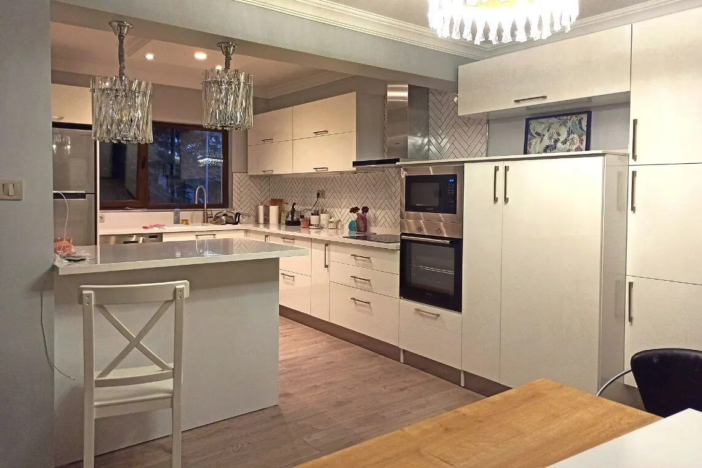
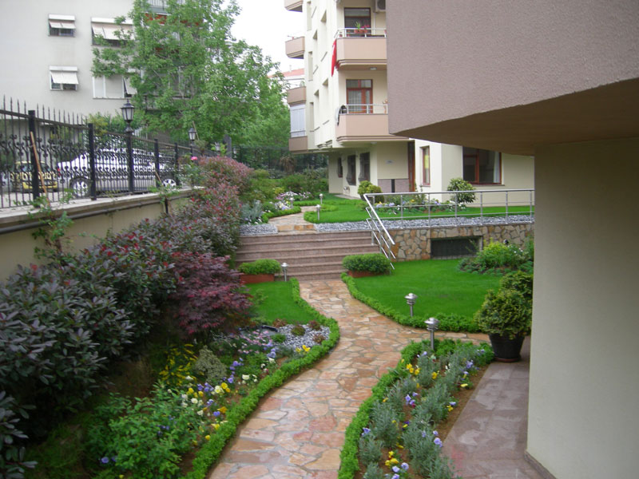
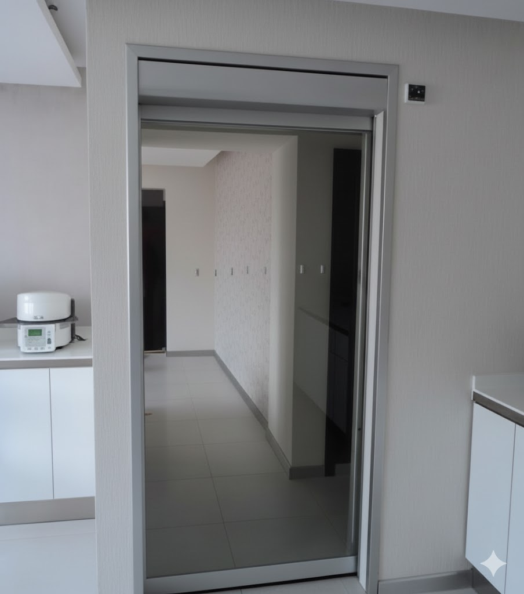
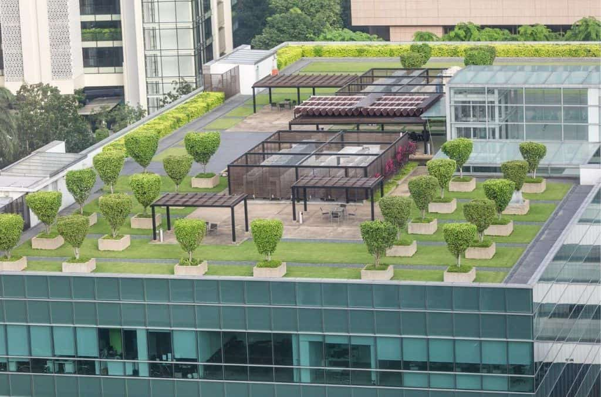

Tamamladığımız Projeler
Tamamladığımız Projeler
Hizmetlerimizdeki kaliteyi ve dönüşümü kendi gözlerinizle görün.

kadıköy - Müşterimiz için anahtar teslimi modern banyo yenilemesi.

Sarıyer - 3D tasarıma uygun, tam otomatik sulama sistemli peyzaj uygulaması.

Kartal - Dolap ve ışıklandırma tasarımı yapılmış, modern mutfak projesi.

Esenyurt - Düzenli bakım, budama ve bitki sağlığı hizmetleri.

Gaziosmanpaşa - Sıradan kapı yerine kayar kapı montajı.

Levent - Ofis binasının çatısına oturma alanlı , yeşil bahçe uygulaması.